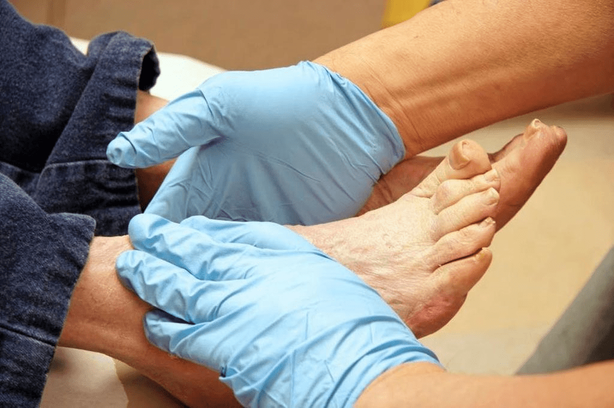
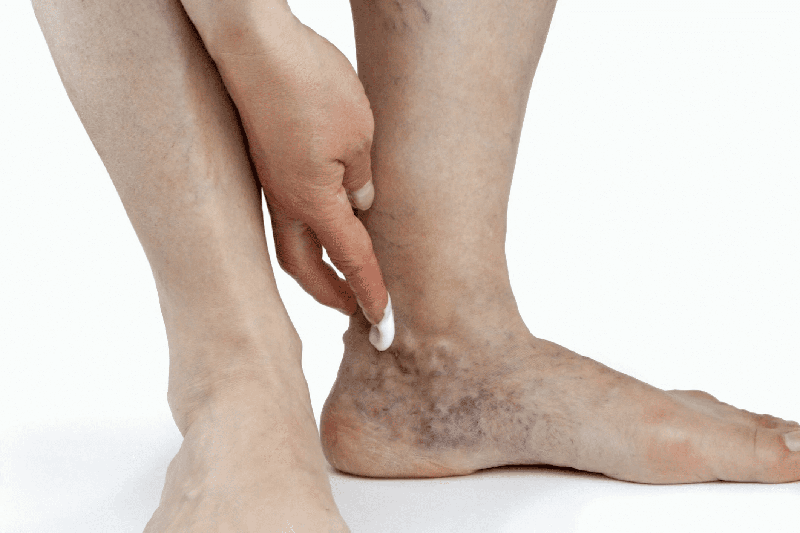
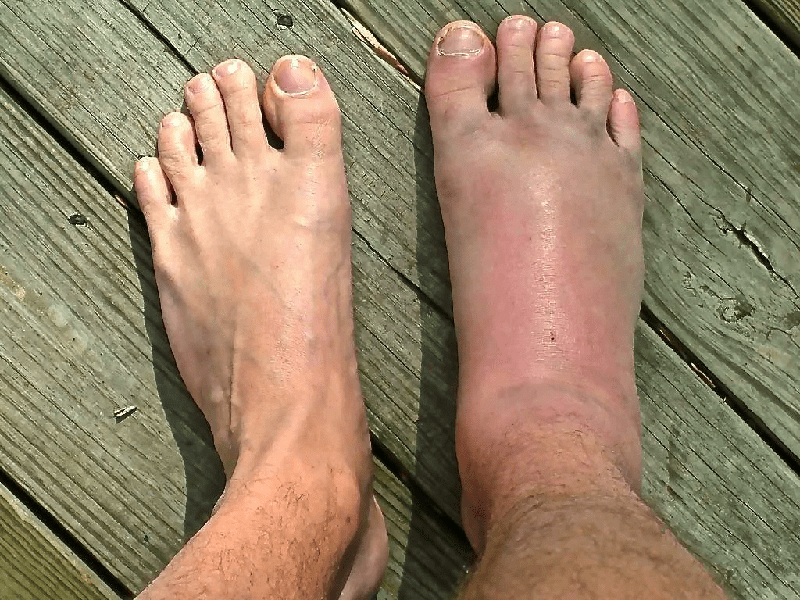

Bruno Fumagalli
Figura pubblica

Mi piace

Contatti


Piace a 18 889 persone
Bruno Fumagalli
Non ignorare i sintomi del diabete, le sue conseguenze possono essere irreversibili! Sto raccontando di un prodotto con cui potete superare questa malattia mortale. Modo collaudato al 100% per tornare a una vita sana!
Salve! Sono di nuovo con voi, Bruno Fumagalli. Per chi non lo sapesse, nel mio blog parlo di varie malattie e dei moderni metodi per affrontarle. Fin dall'infanzia, ho avuto una passione per la medicina e mi sforzo di fare cose significative per l'umanità. Finora non ho l'opportunità di aiutare direttamente i pazienti, dal momento che sto studiando solo in un'università di medicina. Ecco perché ho deciso di creare un blog in cui professionisti esperti condivideranno novità di alta qualità che vi aiuteranno a guarire presto.
In questo articolo, ho toccato una comune malattia del pancreas: il diabete mellito di tipo II (resistente all'insulina). Durante l'intervista con un endocrinologo praticante, ho appreso dal medico di un nuovo prodotto efficace che ha già aiutato migliaia di nostri compatrioti a far fronte a questa malattia mortale. Devo dirvelo subito!
SI PREGA DI LEGGERE ATTENTAMENTE L'INTERVISTA: non ignorare i sintomi del diabete e agire immediatamente per proteggere la propria salute e salvare vite! Grazie a un nuovo prodotto sul mercato italiano, questo è disponibile per tutti! POTETE BATTERE IL DIABETE!
Antonio Ruggiero
Dottore in Scienze Mediche, Endocrinologo di primo piano presso la Clinica di Milano
Diabete mellito di tipo II. Cos'è?
Il diabete mellito di tipo II è un disturbo del metabolismo dei carboidrati. Questo tipo di diabete è caratterizzato da una diminuzione della suscettibilità delle cellule all'azione dell'insulina, una forte restrizione nella fornitura di glucosio ad esse. E la relativa insufficienza di insulina nel tempo può trasformarsi in assoluta, con il progredire della malattia.
Quali fattori possono influenzare lo sviluppo della malattia?
I principali fattori di rischio per lo sviluppo del diabete di tipo II sono:
- Età. Molto spesso, la malattia si sviluppa oltre i 40 anni.
- Sovrappeso. Nel 60-90% dei pazienti supera significativamente la norma.
- Stile di vita sedentario.
- Predisposizione genetica. Esistono diversi geni responsabili della funzione delle cellule beta del pancreas. La loro presenza nel genoma è associata ad un aumentato rischio di sviluppare il diabete. I fattori ambientali possono aumentare questo rischio.
- Sindrome metabolica. È una combinazione di ipertensione, colesterolo e livelli di trigliceridi.
Ci sono sintomi di questa malattia? Quale?
A differenza del diabete di tipo 1, il diabete di tipo 2 può essere asintomatico per molto tempo. Ma è ancora possibile sospettare violazioni del metabolismo dei carboidrati. Secondo i seguenti indicatori:
- sete, aumento dell'assunzione di liquidi fino a 3-5 litri al giorno
- prurito della pelle e delle mucose
- stanchezza cronica
- aumento della sensazione di fame
- bocca asciutta
- visione sfocata
- emicrania
- aumento della quantità di urina quotidiana, anche di notte
- perdita di peso inspiegabile
Negli ultimi anni, l'OMS ha notato un aumento significativo dell'incidenza del diabete di tipo II nel mondo. In Italia, nel solo periodo 2020-, il numero di persone con diagnosi di diabete è aumentato del 7% rispetto al periodo precedente. Questo è un numero catastroficamente enorme!



sindrome del piede diabetico, conseguenze del diabete di tipo II avanzato
Per molti versi, il rapido aumento dell'incidenza è associato all'epidemia di obesità ed è già considerato un problema sociale. Peggio ancora, più tardi viene rilevata la malattia, più gravi sono le sue conseguenze. Alcuni cambiamenti nel corpo sono completamente irreversibili e comportano una morte prematura e inevitabile. Puoi smettere di essere una vittima del diabete oggi e ti mostrerò come.

C'è una soluzione!
Proprio di recente, i miei colleghi hanno terminato di testare un nuovo prodotto, che ho ricevuto una quantità molto significativa di feedback positivi. Sto parlando del complesso naturale . Il prodotto elimina i sintomi sgradevoli e agisce sulla causa della malattia, contribuendo alla naturale stabilizzazione dei livelli di zucchero nel sangue. Una ricezione del corso aiuta a rafforzare il sistema immunitario e migliorare il benessere.
Perché sto parlando di questo particolare metodo di trattamento del diabete?
Perché nella mia pratica questo è il primo prodotto che consiste interamente di sostanze naturali: estratti vegetali, vitamine e oligoelementi. non contiene conservanti, componenti chimici e OGM. Il complesso naturale è assolutamente sicuro. Il prodotto può essere assunto a casa da solo in quanto non ha effetti collaterali.
I principi attivi contribuiscono a:
- eliminazione dei sintomi spiacevoli e miglioramento del benessere
- diminuzione della resistenza all'insulina
- normalizzazione del metabolismo della glicemia e dei carboidrati
- ripristino della funzionalità epatica e pancreatica
- abbassamento del colesterolo
Come funziona il prodotto?
guarisce il corpo ed elimina il diabete in 4 fasi:
Fase 1: normalizzazione del peso, abbassamento dei livelli di colesterolo nel sangue
La fibra Konjac (fibra alimentare) aiuta a controllare le voglie. Smette di voler mangiare tutto il tempo, le voglie malsane di dolci diminuiscono. I beta-glucani dei funghi "estraggono" il colesterolo dagli alimenti, impedendone così l'assorbimento nel sangue. Questo porta ad una naturale riduzione dei livelli di colesterolo nel sangue. Di conseguenza, il rischio di malattie del sistema cardiovascolare, incl. infarto e ictus sono ridotti al minimo.
Fase 2: ripristino del corretto funzionamento della tiroide e del fegato
L'estratto di semi di fagiolo bianco e l'estratto di radice di tarassaco migliorano i processi metabolici, inclusa la regolazione del metabolismo dei carboidrati, la rigenerazione delle fibre nervose e il miglioramento della circolazione sanguigna. Pertanto, si verifica il ripristino delle cellule danneggiate del fegato e della tiroide, il loro funzionamento migliora. Le tossine vengono eliminate naturalmente dal corpo.
Fase 3: miglioramento della suscettibilità cellulare all'insulina, normalizzazione dei livelli di zucchero nel sangue
L'estratto di cannella, la vitamina C, il cromo e lo zinco riducono i livelli di zucchero nel sangue alla normalità. Ciò è dovuto a un aumento della sensibilità all'insulina e, di conseguenza, a un migliore trasporto del glucosio dal sangue alle cellule. Tutti gli organi ottengono finalmente la nutrizione necessaria, il corpo è carico di energia: lo stato di salute migliora, la sonnolenza scompare, la stanchezza cronica scompare.
Fase 4: disintossicazione del corpo, rafforzamento dell'immunità
L'estratto di corteccia del crespino comune aiuta ad aumentare le proprietà protettive del corpo, grazie alle quali tutti gli organi e i sistemi si riprendono più velocemente. Il corpo affronta meglio qualsiasi stress ed è protetto in modo affidabile da influenze dannose. L'estratto di foglie di tè verde ha un effetto antiossidante - rimuove i radicali liberi (scorie, tossine, prodotti di decomposizione) dal corpo. Lo stato emotivo si stabilizza, il sonno migliora.
2 volte al giorno = addio diabete!
Assumere 1 capsula 2 volte al giorno mezz'ora prima dei pasti con un bicchiere d'acqua (200 ml). La durata ottimale del corso è in media di 4-6 settimane, ma non inferiore a 30 giorni. Il fatto è che il prodotto ha proprietà cumulative e ci vuole tempo prima che i principi attivi di vengano integrati nel metabolismo. Questo è ciò che garantisce un effetto benefico stabile ea lungo termine del prodotto!
I pazienti sono soddisfatti di e consiglierebbero questo prodotto ad altri.
Da 7 mesi prescrivo questo complesso naturale a tutti i miei pazienti, sono responsabile della loro vita e salute. E quindi sono incredibilmente felice che grazie a ognuno di loro abbia ricevuto un ottimo risultato. Sento parole di gratitudine ogni giorno, ma la ricompensa principale per me sono i sorrisi felici delle persone che ho aiutato!
+ alimentazione sana + esercizio = la tua formula per la salute e la longevità!
Consiglio anche ai miei pazienti di mangiare più sano e vario, mangiare più frutta e verdura fresca, bere più acqua. Ma è meglio limitare il consumo di grassi animali e carboidrati facilmente digeribili. Inoltre, non dimenticare esercizi, passeggiate e altre attività fisiche che sono fattibili per te. Il movimento è vita!
Da medico, vi assicuro: , unito a queste semplici linee guida, è il Vostro percorso verso una vita sana e felice senza diabete!
Conclusione
Cari abbonati e lettori del mio blog, spero che il mio articolo vi sia stato utile e che ascolterete i consigli di un medico esperto e vi prenderete cura della vostra salute e di quella delle persone a voi vicine.
Il diabete è un incubo dei nostri giorni, quasi ogni 6 persone hanno familiarità con questa malattia ... può cambiare in modo significativo questa triste statistica. Parla del prodotto alla tua famiglia e ai tuoi amici, e poi nei prossimi anni il numero di persone che si sono riprese aumenterà in modo significativo e il numero di pazienti con diagnosi di diabete, al contrario, sarà dimezzato, o anche di più! Ricorda: la tua salute è nelle tue mani!
Sconto unico del 50% per lettori e abbonati del blog!
Ho una grande notizia per Voi! Il Dr. Antonio Ruggiero ha concordato con il produttore condizioni esclusive per l'acquisto di per tutti gli iscritti e lettori del mio blog. Solo fino a fine giornata puoi ordinare un prodotto con il 50% di sconto! Nella mia memoria, il produttore fa per la prima volta un regalo così generoso. Non ho potuto fare a meno di chiedere "perché?". Si è scoperto che conosceva in prima persona questa malattia, sua madre è morta di diabete e questo è ciò che lo ha spinto a sviluppare un prodotto innovativo che potrebbe salvare la vita di milioni di persone. Tanto rispetto e gratitudine per lui!
Non perdere l'occasione di approfittare di questa offerta senza precedenti!
Domani il prezzo di tornerà allo standard (2 volte superiore)
Per comodità, di seguito è riportato un pulsante con il quale è possibile accedere al sito Web ufficiale del produttore. Affrettatevi e ordinate il prodotto scontato. La durata della promozione è limitata!
Siate sani e a presto! Non perdere il mio prossimo utile articolo tra una settimana.
Cordiali saluti Bruno Fumagalli.
Mi piace
Commenti:
Condividere

2783
Angelo Basile
Ottime capsule, quello che serve ad un diabetico! E, soprattutto, completamente naturale! L'ho provato
personalmente, il mio livello di zucchero è diventato stabile!
38
Carla Rossi
Ho preso per mia madre, l'ha aiutata.
54
Francesca Esposito
Grazie mille per il Suo blog! Si prega di condividere informazioni molto utili. Sono sicura che molti
diabetici saranno soddisfatti di questo rimedio. Questo prodotto ha funzionato benissimo per me.
81
Angela de Luca
Ero così tormentata dal mio diabete ... È un bene che mi sia imbattuto in questo articolo, ci proverò.
90
Franco R
La qualità di queste capsule è eccellente. Molto meglio dei prodotti alternativi della farmacia.
48
Mario Palmieri
Sembra convincente. Ordinerò per mia moglie, ha solo il diabete di tipo 2.
48
Maria
non ha davvero effetti collaterali! Pensavo già che niente mi
avrebbe aiutato... I soliti
rimedi che usavo facevano sempre male ai miei reni. Grazie al produttore e al tuo blog!
39
Carlo P
Super prodotto! I miei livelli di zucchero sono tornati alla normalità solo 4 giorni dopo aver
iniziato a prendere . Continuo a prendere le capsule per liberarmi
del diabete per sempre!
19
Vincenzo Greco
L'effetto cumulativo non è finzione. Ho finito il corso 3 mesi fa e finora è andato tutto bene!
9
Anna Morelli
Wow, ottimo affare! Un buon motivo per provare un nuovo prodotto, altrimenti i miei soliti mezzi hanno
iniziato a farcela male. È interessante sapere se il complesso, costituito da ingredienti a base di
erbe, funziona davvero così bene.
5
Luciano
ha ridotto il mio appetito e mi ha aiutato
a perdere 9 kg
in 4 settimane. Per controllare, misuro lo zucchero per abitudine ogni giorno: va tutto bene. Io
consiglio!
9
Moretti
Queste sono le migliori capsule per il diabete! Solo grazie a loro sono riuscito a superare questa
malattia, anche se i medici hanno detto che avrei preso le pillole per tutta la vita.
12
Silvana M
Aiutato anche mia nonna! :)
32
PASSARE AL SITO UFFICIALE